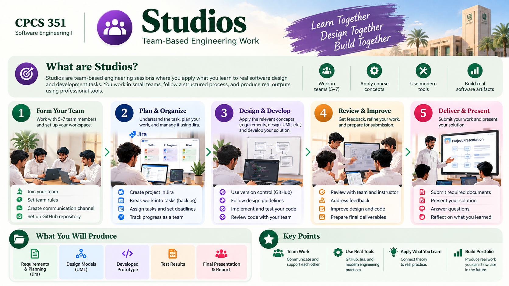

One workspace for team practice.
Six guided engineering studios. Each brief has a stable home, linked back to the concepts and forward to project evidence.
Studios: your team workflow at a glance

How Studios works
Six formative team studios. Use each task page as the home for its instructions and connected learning.
The six engineering studios
Team Workflow
Read the task, produce engineering evidence and carry the work into your project.
Requirements & Traceability
Read the task, produce engineering evidence and carry the work into your project.
Design Review
Read the task, produce engineering evidence and carry the work into your project.
Collaborative Construction
Read the task, produce engineering evidence and carry the work into your project.
Testing & Quality
Read the task, produce engineering evidence and carry the work into your project.
AI-Assisted Engineering
Read the task, produce engineering evidence and carry the work into your project.
Before Studio 1
The Unit 01 Foundation Workshop is an introductory, ungraded activity. It is not a seventh formal Studio.